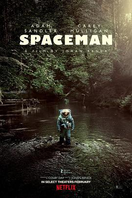

5.5
太空孤航
Spaceman
2024
美国
评分 5.5
导演:
约翰·伦克（Johan Renck）
演员:
亚当·桑德勒 / 凯瑞·穆里根 / 保罗·达诺 / 昆瑙·内亚尔 / 伊莎贝拉·罗西里尼 / 莉娜·奥琳
类型:
冒险,剧情,奇幻
剧情简介
宇航员雅各布·普罗查茨卡（亚当·桑德勒饰）独自驾驶宇宙飞船，深入太阳系边缘，执行一项科考任务：采集一片被称作“Chopra尘云”的神秘宇宙微粒。六个月过去，他的妻子琳卡（凯瑞·穆里根饰）在地球上沉默了——通讯被切断，妻子的信号越来越淡，他忍受孤独，也开始怀疑自己是否还被等待。在漂浮于星海的金属舱内，他发现一个意外的“搭乘者”：一只名为哈努什（保罗·达诺配音）的巨大类蛛生物。它不像入侵者，更像一种存在已久的观测者，静静地探究雅各布的记忆、情感与悔恨。雅各布从抵触到思索，逐渐与它形成一种奇特联系：他一次次在回忆里探寻自己为何离开，自己是否值得被拯救。飞船通往Chopra尘云的路上，雅各布在时间与宇宙的边缘迷失，也在妻子的影像中重生。他见自己忽略的婚姻瞬间，父亲的背叛印记，以及成为英雄的野心如何把他推离人群。哈努什引导他穿越意识裂缝，让他明白：真正的使命不是采集尘云，而是找回那颗想爱的心。当飞船最终抵达尘云，雅各布发现那不是简单的太空现象，而像宇宙的“记忆库”，每一段时间、每一个瞬间都在其中交汇。宇宙庞大却孤独，而他在其中体会到的人性，却是最真实的重量。在尘云边缘，他选择放下追逐，而回头去寻找家与救赎。影片虽描绘太空、冒险、未知，却更是一次内心的旅程。它在星光之外，映出一个男人对妻子的思念、对过往的忏悔、对生活的渴望。太空再广阔，也比不上那座属于爱的港湾。